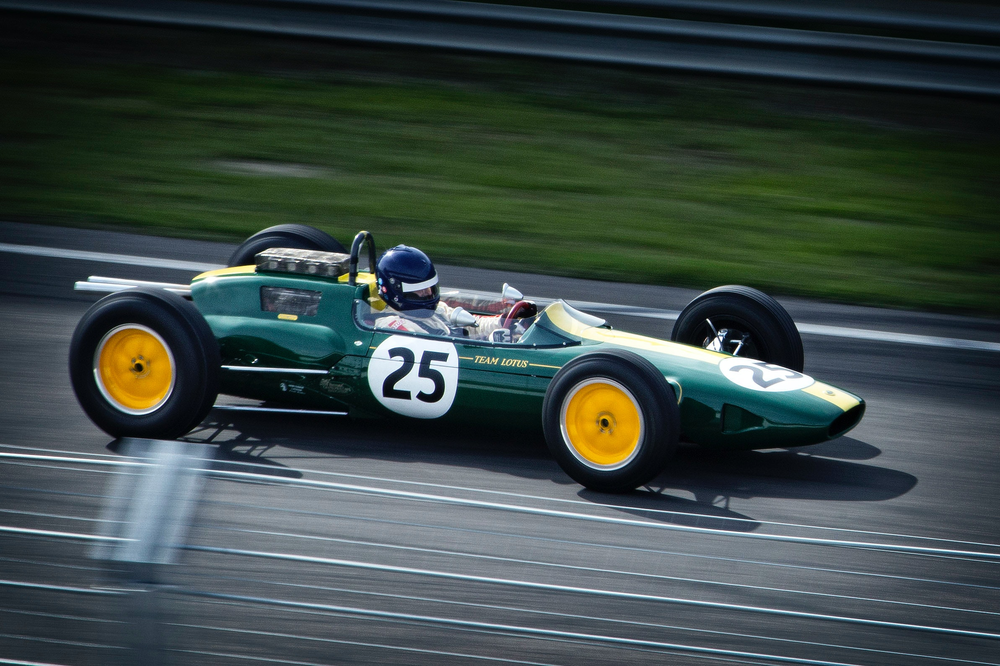

¿Cómo funciona la clasificación de la F1? La clasificación se utiliza para determinar las posiciones de la parrilla de salida para la carrera del domingo y tradicionalmente tiene lugar un sábado, o un viernes por la tarde durante los fines de semana Sprin
En la sesión todos los pilotos salen a la pista para marcar el tiempo de vuelta más rápido posible en 18 minutos. Los dos pilotos más lentos son eliminados de la sesión y comenzarán la carrera desde su posición final."El Chueco"
"Mister Monaco"
"Mays"
"Chico Landi"
"Gilles"
El Chueco
Gilles
Chico Landi
Mister Monaco
Mays
